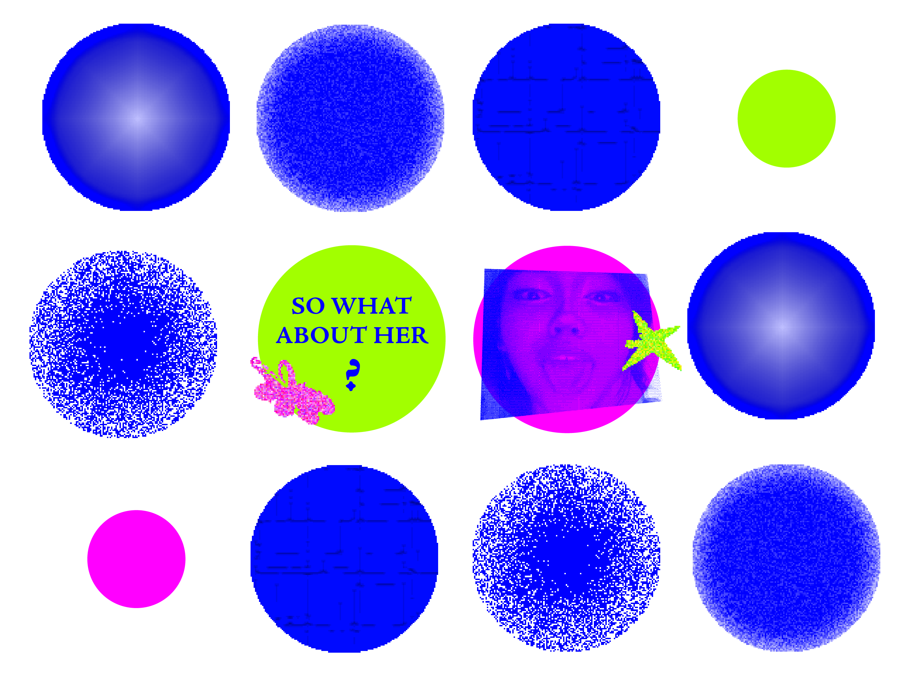
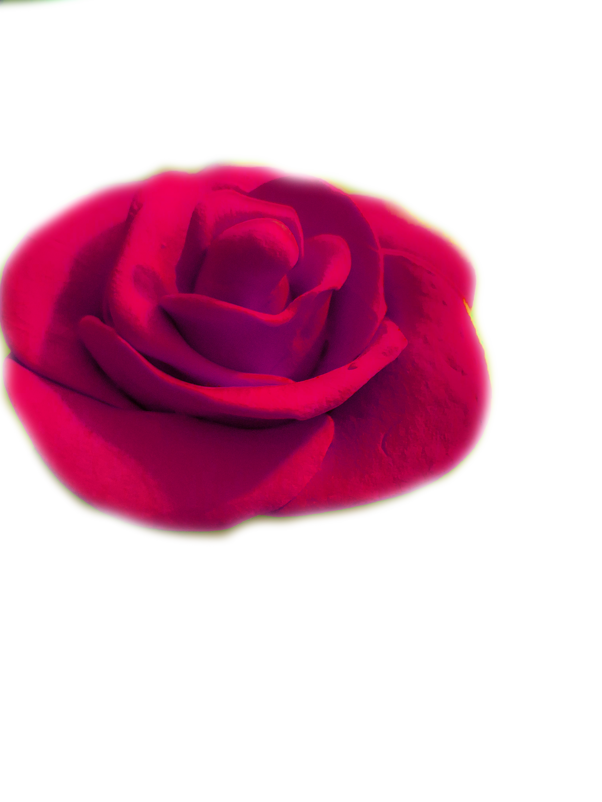
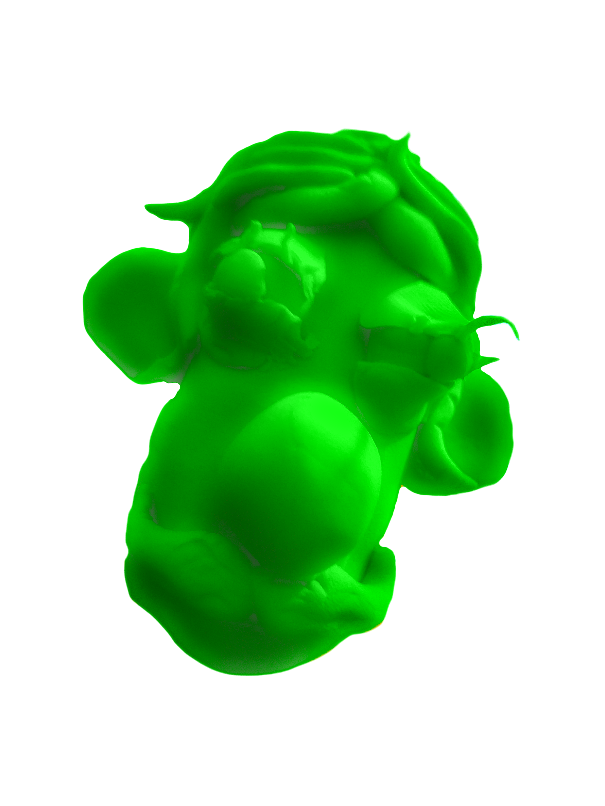
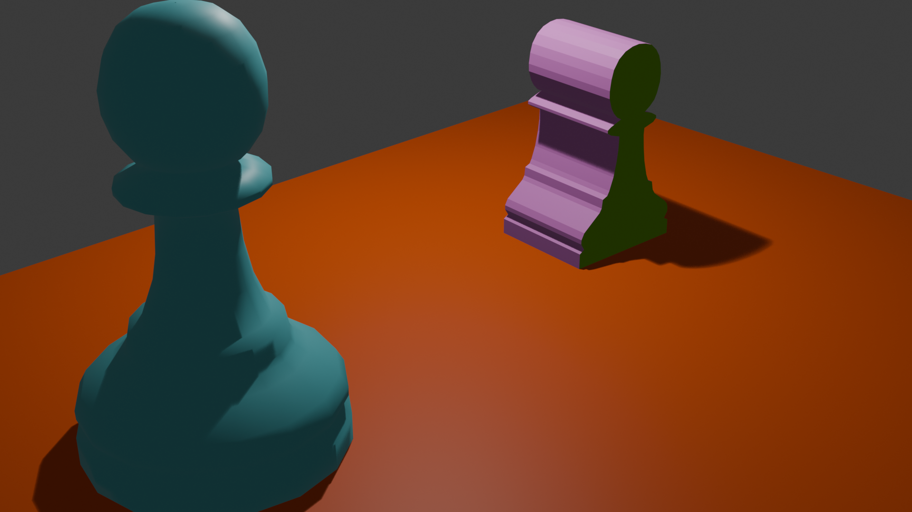
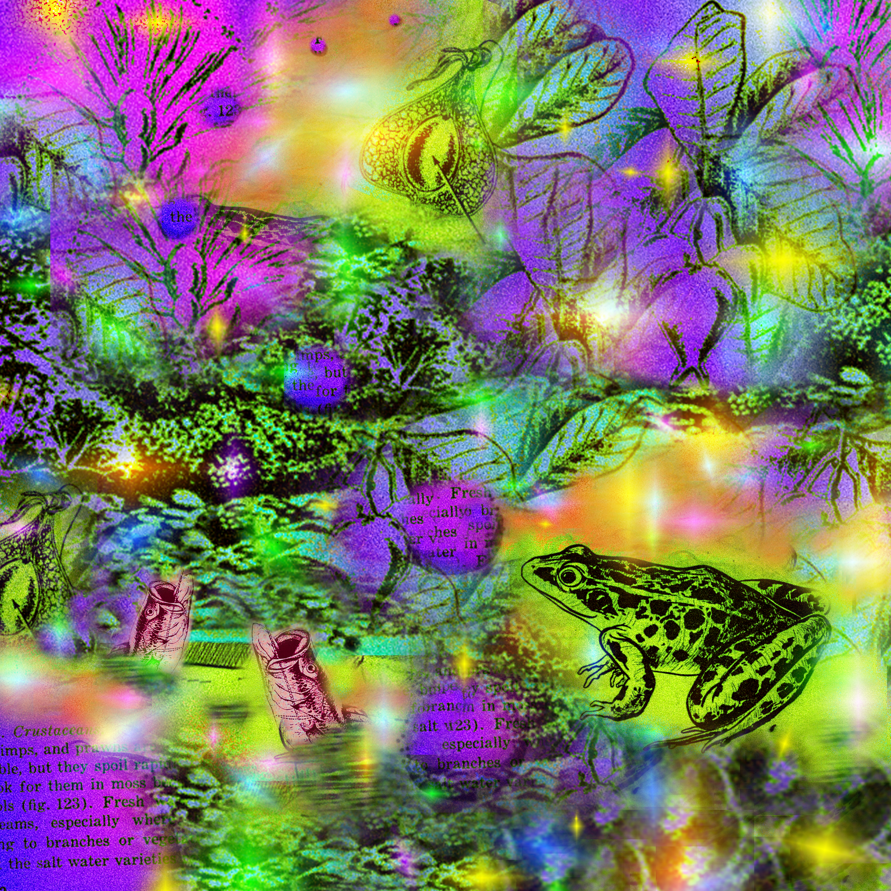
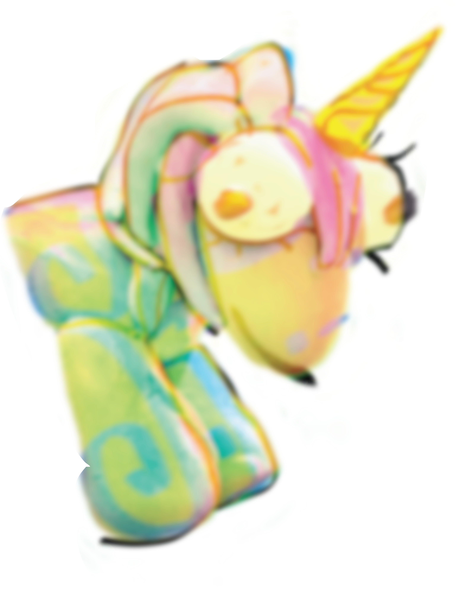
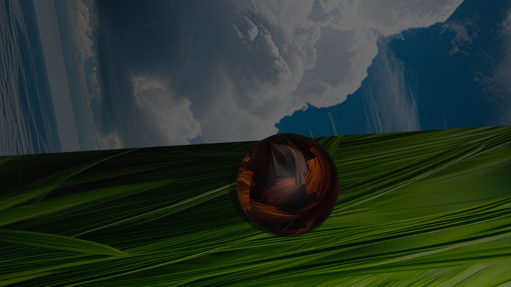

Table of Contents
About Me
Hey, my name’s Jastin! I’m currently studying graphic design and broadening my experience in art and design.
Design and art are crafts I’ve always been surrounded by. It has taught me to figure out the world visually and shape my perspective in what I see is important in my life.
I’ve found them to be my way of communicating what I want to see more in the world. I make sure that what I make represents something about me whatever it may be.
I’ve always pictured a world that had more life and color. It’s filled with an exceeding amount of corrupt and negative people and issues and with that I think people should be able to escape and be surrounded by things that give them happiness and life. My escape for example is when I create. We only live one life and we should make the most out of it without having to deal with the destruction of our world and everything in it.
1

2
project 1

Proposal: For this first project I want to lean into the surrealism of the “uncanny valley” effect. I love the idea of having an element of the poster look unsettling, but then I thought that maybe I wanted something that looked like a vomit of colors and weirdness while still having that semi realistic vibe to it since I had more images that I could use to portray that. I want the poster to also reminisce about nostalgia and childhood.


2
project 1
I ended up going on a fun and playful route for this project. I thought that incorporating an “Alice in Wonderland” like weirdness made more sense in my eyes. It may look like nonsense to others but to me it’s a representation of what I find somewhat comedic.
3
Project 2 - Quasi-object
References (2" x 1")
*References*
Proposal:
For this project I decided to get inspiration from my Pingu keychain who kind of looks like a cowboy sheriff which I thought was cool. I decided to pick this object because I love stop motion and the process behind it. The show Pingu is a stop-motion made in Switzerland and growing up I loved how the actions were shown without the use of real words.
4
Quasi-object (Final)
*Final*
Detailed exploration of the Pingu cowboy concept, integrating stop-motion aesthetic principles into digital 3D/graphic composition.
5
Project 3 - Time Based Video
Media (2" x 1")
Soon to be added
6
Project 3 (Cont.)
Time-based multimedia video explorations and storyboards referencing asset folders BLENDERR and dumuk.
7
Mini Projects
 Erm Duck
Erm Duck

Flower Hector the Collector
Hector the Collector

Guy
Chessyyy Abe Linc Hat
Abe Linc Hat
8
Mini Projects (Cont.)

Frogland
Unicorn Abe Linc
Abe Linc
 The Acrobats Magic
The Acrobats Magic

Furball Vase Yes
Vase Yes
9
How to Reach Me
Image (2" x 1")
Feel free to reach out for collaborations, project inquiries, or design discussions!
Email: student@art10c.edu
Assets Directory: /BLENDERR /dumuk
10
Thank You
Jazee’s Portfolio — 2026